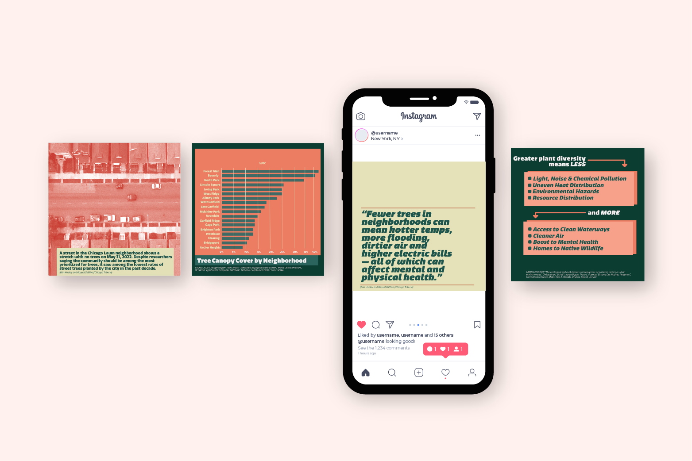
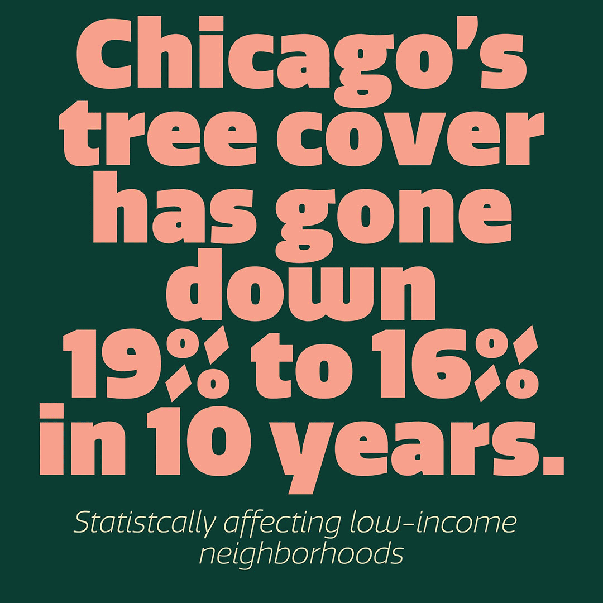
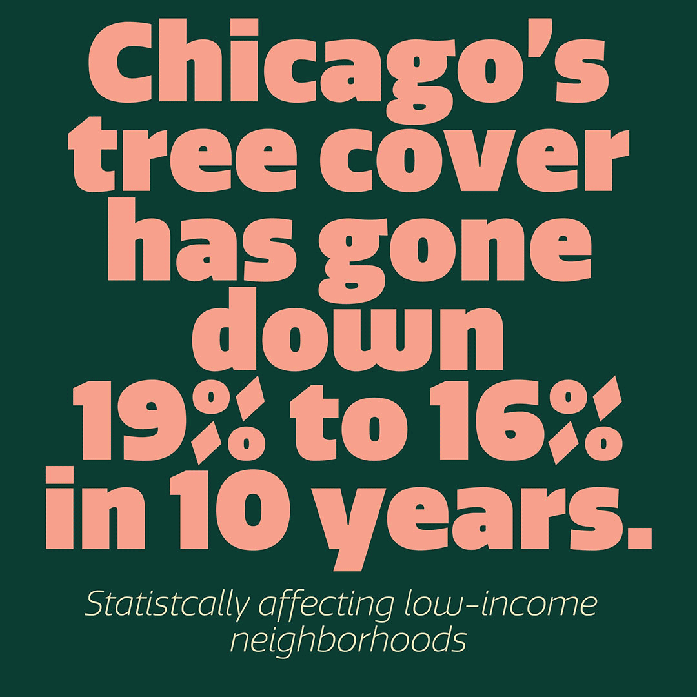

chicago tree infographic
I designed an infographic to highlight the issue of tree population density in Chicago, particularly focusing on disparities in less affluent areas of the city. This infographic was specifically tailored for an Instagram post, where the aim was to grab the attention of users scrolling through their feeds. To achieve this, I carefully curated a color palette intended to captivate viewers and compel them to pause and explore the post further.
The infographic educates about tree disparities and the impact on Chicago's environment and social equity, raising awareness and promoting conversations about fair resource distribution and environmental justice.

 
